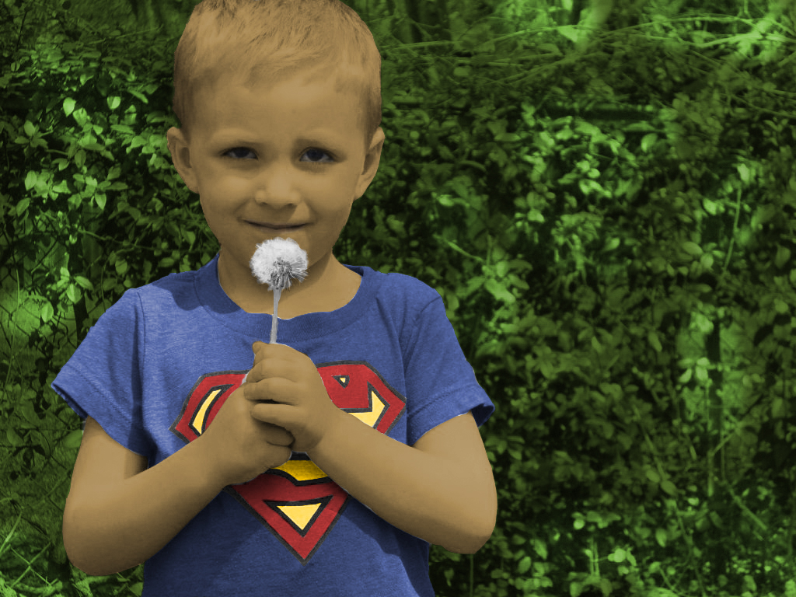
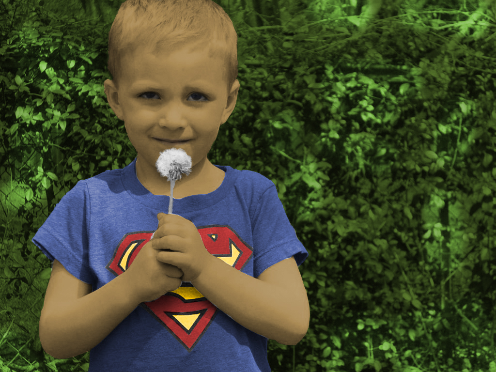

୨♡୧ vektorska grafika ୨♡୧
ove vježbe fokusirale su se na izradu vlastitog fonta, što nikad nisam radila i bilo je prezanimljivo i korisno. upoznavali smo se s programima fontforge i illustrator.
u prvoj sam vježbi napravila font sa slovima svoga punoga imena i slovima hrvatske abecede, a ispao je ovako:
ostale vježbe predavali smo u pdf-u te one izgledaju ovako:
na kraju cjeline radili smo projektni zadatak u illustratoru na temu "flora&fauna". imali smo određen broj složenih elemenata koje smo morali ukomponirati u finalnu sliku. ovo je moj projektni zadatak:
୨♡୧ piksel grafika ୨♡୧
ove vježbe fokusirale su se na pisel grafiku, te program photoshop.ove tri vježbe su bile relativno lagane jer sam upoznata s photoshopom, a projektni zadatak je bio jako zabavan.
ove vježbe fokusirale su se redoslijedom na retuširanje, koloriranje te fotomontažu:
 

u drugom projektnom zadatku spojili smo naučeno znanje koje smo stekli u prijašnje 3 vježbe. fotomontažu, retuširanje i koloriranje smo koristili u ovom projektnom zadatku da iz bazne fotografije izbrišemo mrlje da budu neprimjetne, da dodamo vlastite elemente fotografija te da fotografiju u cijelosti koloriramo u realističnom tonu. ovo je moj projektni zadatak:

୨♡୧ video&web ୨♡୧
ovo su mi, uz font, bile najzabavnije vježbe. malo je komplicirano raditi vlastitu web stranicu, ali mi se jako sviđa proces. još više mi se sviđa vlastiti video editing, kojim se planiram jednog dana baviti u životu te mi je jako drago da sam učila koristiti se programom za video montažu.
u ovoj vježbi radili smo kinemagrafove. jedan po pratnji video upute, drugi samostalno:


u ovoj smo vježbi po uputi montirali vlastiti video:
za posljednju vježbu sam si dala najviše truda, te sam izradila vlastitu html web stranicu. možete je pogledati na linku: